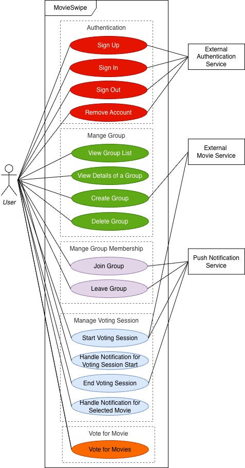

4. RQ2: MovieSwipe Formal Use Case Specifications
We broke the main app features into 15 detailed use cases, such as Create Group, Delete Group, Join Group, Vote for Movies, etc.
We devised a formal use case specification for each such use case, describing how a user (an "actor") interacts with a system to achieve the specific goal and outlining the main triggers, success path, and alternative failure paths.
Here are all formal use case specifications for MovieSwipe. Please note that these files might be slow to load in the browser. We recommend downloading this zip file which contains all formal use case specifications as markdown files, to view the files locally.
- UC1: Sign Up
- UC2: Sign In
- UC3: Sign Out
- UC4: Delete Account
- UC5: Create Group
- UC6: View Groups List
- UC7: View Details of a Group
- UC8: Delete Group
- UC9: Join Group
- UC10: Leave Group
- UC11: Start Voting Session
- UC12: Handle Notification for Voting Session Start
- UC13: End Voting Session
- UC14: Handle Notification for Selected Movie
- UC15: Vote for Movies
Use Case Diagram
The use case diagram was not provided to GenAI but rather used as a help for tracking our progress. We include it nevertheless for completeness. Use cases associated with a feature are highlighted in the same color.
